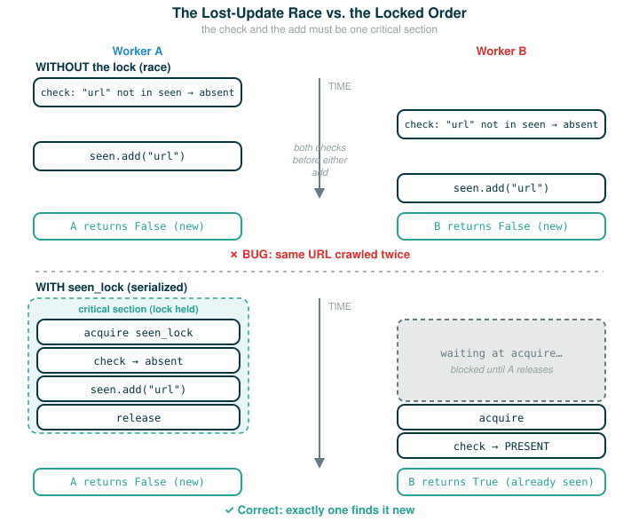

4.8.5 Locks, Critical Sections, and With Statements
The previous lesson showed how shared mutable state breaks when two threads interleave: both read the same value, both compute from it, and one update is silently lost. This lesson gives you the direct tool for fixing that: a lock.
By the end you will be able to do four things: say what a critical section is and why it must run one thread at a time, read the official web crawler's already_seen function and explain why the check and the add must be locked together, rewrite that function with a with statement so the lock is released even when the code returns early or raises, and reason about lock granularity so you protect exactly the right amount of code. We work mostly through one running example, the web crawler's set of already-seen URLs, because it is small enough to trace by hand and real enough to matter.
A Key to a One-Person Room
Picture a small room with one door and one key. Inside the room is a shared notebook. The rule is simple: to write in the notebook, you must hold the key. There is only one key, so at most one person can be inside writing at any moment. When you are done, you hang the key back on the hook outside, and the next person can take it.
If everyone follows that rule, the notebook never gets two people scribbling over each other. The key does not magically protect the notebook on its own. It protects the notebook only because every writer agrees to take the key first. If one person sneaks in without the key, the protection is gone.
A lock is exactly that key, and the room is a critical section: a stretch of code that must be executed by only one thread at a time because it touches shared state in a way that would be unsafe if interleaved. A thread acquires the lock to enter, does its protected work, then releases the lock so another thread can enter.
What a Lock Actually Is
Python's threading module provides a Lock object with two operations, acquire and release. A lock can be held by at most one thread at a time. Once a thread acquires it, no other thread can acquire it until the holder releases it. A thread that calls acquire on a lock another thread already holds simply waits, paused at that line, until the lock becomes free.
The lost-update bug from the previous lesson happened because the read, the compute, and the write could be split apart and interleaved across threads. A lock lets you glue those steps back together. The rule is:
Before reading and writing the protected state, acquire the lock.
After finishing the update, release the lock.If every thread that touches the shared state follows that rule, then the read-compute-write sequence runs as one indivisible group. While one thread holds the lock, every other thread that wants in is waiting outside the door, so no second thread can read a stale value mid-update.
One thing to hold onto: a lock protects data only by convention. It guards the shared state only for the threads that actually acquire it before touching that state. A thread that skips the acquire call is the person who snuck in without the key.
Creating a Lock
You make a lock by calling threading.Lock(). The crawler keeps a shared set of URLs it has already encountered, plus a lock that guards that set:
# (1)
seen = set()
seen_lock = threading.Lock()
The second line is the new construct. Follow it one token at a time:
seen_lock = threading.Lock()
├─ seen_lock ... the name we will use to refer to the lock
├─ = .......... assignment: bind the name on the left to the value on the right
├─ threading ... the threading module
├─ .Lock ....... the Lock type inside that module
├─ ( ........... begin the call that constructs a new lock
├─ ) ........... end the call (Lock takes no arguments here)
└─ action ...... create a fresh, unheld lock and bind it to seen_lockThe new lock starts out unheld, so the first thread to call acquire on it gets in immediately. The name seen_lock is deliberately paired with seen: this lock guards that set, and nothing else.
Acquiring and Releasing
The two operations on a lock are method calls. Here is acquire:
seen_lock.acquire()
├─ seen_lock ... the lock object
├─ .acquire .... the method that takes the lock
├─ ( ........... begin the call
├─ ) ........... end the call
└─ action ...... take the lock if free; otherwise wait here until it is free, then take itAnd release is its mirror image, handing the key back:
seen_lock.release()
├─ seen_lock ... the lock object
├─ .release .... the method that gives the lock back
├─ ( ........... begin the call
├─ ) ........... end the call
└─ action ...... release the lock so a waiting thread may now acquire itEvery acquire must eventually be matched by a release. If a thread acquires the lock and never releases it, every other thread that calls acquire waits forever.
The Problem the Crawler Faces
In the parallel web crawler, a set keeps track of every URL that any thread has encountered, so the crawler avoids processing the same URL more than once (and avoids getting stuck going in circles). Each worker, before it crawls a URL, wants to ask one combined question: "have we seen this URL already, and if not, mark it as seen now."
That combined question is the danger. It is really two steps: check whether the URL is in the set, and if it is absent, add it. If two workers both discover the same fresh URL at the same moment, both might run the check before either runs the add. Both see it as absent, both add it, and both decide to crawl it as new. The page gets crawled twice.
To make this safe, the check and the add must happen together as one critical section, with no other thread allowed to slip between them. That is what the lock is for.
A Warm-Up: Locking a Counter
Before the official crawler code, here is a smaller, clearly-labeled bridge example of mine that shows the shape of a critical section. Suppose threads share a counter and each wants to add one. The unsafe part is exactly read-then-write, so we wrap that part in a lock:
# (2)
count = [0]
count_lock = threading.Lock()
def add_one():
count_lock.acquire()
count[0] = count[0] + 1
count_lock.release()
Between acquire and release, this thread owns the counter. No other thread can be reading count[0] while this thread is partway through updating it, so no update is lost. This is the same pattern you are about to see, just with the simplest possible shared state. (This warm-up is my own; the official example below is the crawler's set.)
The Official Web Crawler Lock
Now the official version. The shared state is the set and its lock from block (1). The protected operation is the check-and-add, written with explicit acquire and release calls:
# (3)
def already_seen(item):
seen_lock.acquire()
result = True
if item not in seen:
seen.add(item)
result = False
seen_lock.release()
return result
Read this carefully, because every line is deliberate. The function acquires seen_lock, so from here until the release it is the only thread touching seen. It starts by assuming the item has been seen before, setting result = True. Then it checks: if item is not in seen, the item is actually new, so it adds the item to the set and records result = False. It releases the lock, then returns result.
The single most important point is which code lives inside the critical section. The lock is necessary here in order to prevent another thread from adding the URL to the set between this thread checking whether it is in the set and adding it to the set. Furthermore, adding to a set is not atomic (it is not a single all-or-nothing step under the hood, but several smaller ones), so concurrent attempts to add to a set may corrupt its internal data. The lock therefore does not protect seen.add(item) alone; it protects the whole question "is this item absent, and if so, add it." The check item not in seen and the mutation seen.add(item) are inside the same acquire-release pair, so no other thread can run its own check in the gap between this thread's check and add.

The With Statement Version
In the explicit version above, we had to be careful not to return until after we released the lock. In general, we have to ensure that we release a lock when we no longer need it. This can be very error-prone, particularly in the presence of exceptions: if an exception fires between acquire and release, the release never runs and the lock is stuck held forever.
So Python provides a with compound statement that handles acquiring and releasing a lock for us. The official crawler code can be rewritten as:
# (4)
def already_seen(item):
with seen_lock:
if item not in seen:
seen.add(item)
return False
return True
The with statement ensures that seen_lock is acquired before its suite is executed and that it is released when the suite is exited for any reason. The object after with (here seen_lock) is called a context manager: an object that knows how to set something up on entry and tear it down on exit. A lock is one such object; entry acquires it, and exit releases it. (The with statement can actually be used for operations other than locking, though we won't cover alternative uses here.) Walk its header one token at a time:
with seen_lock:
├─ with ........ begin a with block governed by a context manager
├─ seen_lock ... the lock, used as the context manager
├─ : ........... begin the indented block that the with statement guards
└─ action ...... acquire seen_lock on entry; release it automatically on every exit from the blockEntering the block acquires the lock. Leaving the block, by any route, releases it. That includes the two return statements inside the block and any exception that might be raised: in all of those cases the lock is released as the block exits. This is why the with version is safer than the explicit pair. There is no path out of the critical section that forgets to release the lock, because releasing is no longer something you have to write by hand.
Notice the logic is the same as block (3), just expressed with early returns. If the item is absent, add it and return False (it was new). Otherwise fall through to return True (it was already seen).
Lock Granularity
Lock granularity is the question of how much, and which, code a single lock protects. The official guidance is a pair of rules:
Operations that must be synchronized with each other must use the same lock. If two pieces of code touch the same shared state and must not interleave, they have to acquire the same lock object, or the lock does not actually serialize them (force them to run one at a time rather than overlapping).
However, two disjoint sets of operations that must be synchronized only with operations in the same set should use two different lock objects, to avoid over-synchronization. If two groups of operations never touch each other's data, forcing them to share one lock means a thread doing group-A work needlessly blocks a thread doing unrelated group-B work. That is wasted waiting and lost parallelism.
You can feel both failure modes:
One lock for everything (too coarse):
threads block each other even when their work is unrelated, so parallelism is lost
One lock missing where it is needed (too fine):
a critical section is left unprotected, so a race condition can remainFor already_seen, the right granularity is one lock, seen_lock, guarding exactly the check-and-add on the seen set. As a practical design note of my own that goes a little beyond the source text: keep the critical section to just the shared-state operation. Slow work that does not touch the shared set, such as actually downloading a page, has no reason to run while holding seen_lock, since holding the lock during it would make other threads wait for no benefit. The official rule is the deeper version of that instinct: same lock for things that must synchronize, separate locks for things that need not.
Why the Lock Makes the Crawler Correct (A Bridge of Mine)
The source does not walk through a thread-by-thread trace here, so the following is a worked illustration of mine, written to make the source's claim concrete. The source's claim is simply this: the lock is necessary to prevent another thread from adding the URL to the set between this thread checking whether it is in the set and adding it.
Picture two workers that both reach the same fresh URL at almost the same moment and both call already_seen on it. Each must acquire seen_lock first, and only one thread can hold the lock at a time, so their critical sections cannot overlap. Whichever worker acquires the lock first runs its entire check-and-add while the other waits at the acquire line. That first worker finds the URL absent, adds it, and sets result = False. Only when it releases the lock can the second worker enter; by then the URL is already in seen, so the second worker's check finds it present and leaves result = True without adding it again.
Because the check and the add ran as one indivisible unit, the two workers never both saw the URL as absent. Exactly one of them found it new. Without the lock, both could have run the item not in seen check before either ran seen.add(item), both would have seen it as absent, and both would have added it and treated it as new.
⚠Common Beginner Traps
- Protecting only the mutation and not the check. For a check-and-add, both the
item not in seentest and theseen.add(item)must be inside the same critical section, or two threads can both pass the check before either adds. - Forgetting to release a lock. Any thread that later calls
acquireon it then waits forever. This is exactly the failure thewithstatement is designed to prevent. - Releasing on the normal path but not when the code returns early or raises. An exception between
acquireandreleaseleaves the lock held. Prefer thewithform, which releases on every exit. - Using different lock objects for operations that must be synchronized. Two critical sections only serialize against each other if they acquire the same lock; with separate locks both sections can run at once, so the race they were meant to prevent still happens.
- Using one lock for everything. Forcing unrelated operations to share a lock is over-synchronization: threads block each other for no reason and you lose parallelism.
- Assuming a lock protects data automatically. It only guards the code paths that actually acquire it; a thread that skips the
acquireis unprotected.
✓Check Your Understanding
- What is a critical section, and what guarantee does a lock give about it?
- In the official
already_seen, why must the checkitem not in seenand the callseen.add(item)be inside the same acquire-release pair? - What does
with seen_lock:do on entering the block and on leaving it, and why is that safer than callingacquireandreleaseby hand? - A single thread runs
already_seen("a.html"), thenalready_seen("b.html"), thenalready_seen("a.html")against thewith-statement version in block (4), starting from an emptyseen. What does each of the three calls return, and how many URLs doesseenhold at the end? - In the bridge illustration, two workers discover the same fresh URL. What does each one finally return, and how many of them find the URL new (add it to
seen)?
Show the answers
- A critical section is a stretch of code that must be run by only one thread at a time because it touches shared state unsafely if interleaved. A lock guarantees that at most one thread is inside the critical section at once: any other thread that tries to acquire the held lock waits until it is released.
- If only the add were protected, two threads could both run the check and both see the item as absent before either adds it, so both would treat the same URL as new. Locking the check and add together makes the combined "absent, so add" decision atomic, so exactly one thread sees it as new.
- Entering the block acquires
seen_lock; leaving the block by any path, including an earlyreturnor a raised exception, releases it automatically. It is safer because you cannot forget to release on some exit path, which is easy to do with explicitacquire/release, especially around exceptions. - The first call returns
False("a.html"is absent, so it is added), the second returnsFalse("b.html"is absent, so it is added), and the third returnsTrue("a.html"is now present, so nothing is added). At the endseenholds two URLs,"a.html"and"b.html". - Whichever worker enters the critical section first returns
False, having found the URL absent and added it; the other returnsTrue, having found it already present. Exactly one of them finds the URL new and adds it toseen.
§Summary
A lock is the direct tool for saying "only one thread may run this part at a time." A critical section is that protected part. A thread acquires the lock to enter and releases it to leave, and any other thread that tries to acquire a held lock waits. The web crawler's already_seen shows why the boundaries of the critical section matter: the check item not in seen and the mutation seen.add(item) must be locked together, or two threads can both treat the same URL as new. The with seen_lock: form acquires on entry and releases on every exit, including early returns and exceptions, so it is harder to leak a held lock. Finally, lock granularity is a balance: operations that must synchronize need the same lock, while unrelated operations should use separate locks so they do not block each other. Protect exactly the shared-state operation that needs exclusivity, no less and no more.
▶Step-Through Checkpoint
A real threading.Lock is managed by Python's threading system and is hard to watch step by step, because the interesting behavior is the waiting. The block below is a deterministic, single-threaded model that captures the mental shape, enter, protect, leave, by using a Boolean flag as a stand-in for "the key is taken." It is not how you would write real concurrent code, but it lets you run the check-and-add logic of already_seen start to finish. Stepping through it draws the environment diagram of that miniature lock: the global frame holds seen pointing at one shared set object on the heap and lock_taken as the stand-in for the key, and each already_seen frame reads lock_taken, flips it to True to "hold the key," touches the shared seen set, then flips it back to False on the way out. Before you step through it, write down three predictions: what lock_taken holds when each call returns, whether the line return "wait" ever runs, and how many already_seen frames open over the whole run and whether two are ever open at once.
# (5)
seen = set()
lock_taken = False
def already_seen(item):
global lock_taken
if lock_taken:
return "wait"
lock_taken = True
result = True
if item not in seen:
seen.add(item)
result = False
lock_taken = False
return result
first = already_seen("index.html")
second = already_seen("index.html")
print(first)
print(second)
print(seen)
Step through it. The first call finds the flag free, takes it, sees "index.html" is absent, adds it, sets result = False, drops the flag, and returns False. The second call finds the flag free again, but now "index.html" is already in seen, so it leaves result as True and returns True. The printed output is False, then True, then the set containing the one URL. That is the lock's promise in miniature: the first caller treats the URL as new, every later caller treats it as already seen.